01 / LAB02
چکیده و نتایج اصلی
در این آزمایش، رفتار نویزی و خطیبودن گیرندهٔ ADALM-PLUTO در فرکانس مرکزی 434 MHz و پاسخ فرکانسی پیوند آنتنی در بازهٔ 400–3000 MHz بررسی شد. توان نویز از نوار 400 kHz، توان تنها و مؤلفههای جانبی از نوارسنجهای 10 kHz و پاسخ آنتن از فایل CSV استخراج شد. مبنای تحلیل، مقادیر عددی ثبتشده در جلسه است [۱].
در بهرهٔ 40.2 dB، با ENR اسمی 15 dB، روش Y-Factor مقدار تقریبی NF = 19.41 dB را میدهد. برآورد مستقیم در همان بهره و با ضریب تبدیل دستورکار، 23.73 dB است. جاروب تکتن در بازهٔ بررسیشده به معیار افت بهرهٔ یک دسیبل نرسید. در آزمون دوتن، اختلاف تن اصلی و مؤلفهٔ جانبی حدود 46.03 dB و شیب مؤلفههای جانبی نزدیک یک بود. بیشینهٔ پاسخ آنتنی در 1660 MHz و پهنای باند سهدسیبلی پیوند حدود 113.5 MHz به دست آمد.
| کمیت | نتیجه | مرجع و تفسیر |
|---|---|---|
| عدد نویز در بهرهٔ 40.2 | 19.41 dB | Y-Factor؛ ENR اسمی 15 dB |
| عدد نویز مستقیم در بهرهٔ 40.2 | 23.73 dB | با GFS = 20 dB و Bn = 400 kHz |
| تراکم یکدسیبلی | بالاتر از انتهای جاروب | P1dB > −80.5 dBm روی محور ورودی اسمی دستورکار |
| تضعیف نسبی مؤلفهٔ جانبی | 46.03 dBc | میانگین هشت سطح؛ شیب جانبی حدود 0.955 dB/dB |
| قلهٔ پاسخ پیوند | 1660 MHz | سطح ثبتشده: −28.10 dB relative |
| باند سهدسیبلی پیوند | 1605.6–1719.1 MHz | پهنای باند 113.5 MHz؛ درونیابی خطی |
02 / LAB02
هدف، چیدمان و مبنای اندازهگیری
هدف، تعیین ارتباط بین بهره، کف نویز، پاسخ تکتن و رشد مؤلفههای بینمدولاسیون، و سپس استخراج باند پاسخ آنتنی بود. مطابق دستورکار، در آزمونهای کابلی، فرستنده نقش منبع نویز یا سیگنال آزمون و گیرنده نقش دستگاه تحت آزمون را دارد. مسیر اتصال مرجع شامل تضعیفگر ثابت 30 dB است. در بخش آنتن، ارتباط از طریق آنتن فرستنده و آنتن گیرنده برقرار میشود [۱، ص. ۱–۳ و ۷–۸].
| پارامتر | مقدار یا مبنا |
|---|---|
| فرکانس مرکزی آزمونهای RF | 434 MHz؛ قابل مشاهده در Part4_topDiagram.png |
| بهرههای اندازهگیری نویز | 29.7, 40.2, 49.6 dB؛ مطابق نام تصاویر |
| بهرهٔ آزمون دوتن | 40.2 dB؛ در تصویر تنظیمات |
| بهرهٔ مرجع تحلیل تکتن | 40.2 dB مطابق بخش ۳ دستورکار؛ جدول XLSX مقدار بهره را جداگانه ذخیره نکرده است |
| تنهای مرجع | f1 = fc + 300 kHz و f2 = fc + 400 kHz؛ فاصلهٔ 100 kHz |
| نوار نویز و نوار تن | بهترتیب 400 kHz و 10 kHz؛ طبق عنوان نوارسنجها |
| نمای طیفی گیرنده | FFT برابر 4096، پنجرهٔ Blackman–Harris؛ طبق تصاویر |
| منبع نویز | تنظیم پیشفرض اعلامشدهٔ جلسه: tx_atten = 58.5 dB؛ ENR اسمی تقریباً 15 dB |
| جاروب تکتن | ۱۰ ردیف در P1db.xlsx، تضعیفهای 60 تا 45 dB |
| جاروب دوتن | ۸ ثبت در تضعیفهای 65, 63, …, 51 dB |
| جاروب آنتن | ۱۳۱ نقطه با گام 20 MHz؛ تضعیف TX برابر 50 dB و بهرهٔ RX برابر 20 dB در تصویر رابط |
سه مرجع سطح در تحلیل تفکیک میشوند: توان خروجی دیجیتال با واحد dBFS، تضعیف فرستنده با واحد dB، و برآورد توان ورودی با واحد dBm. ضریب GFS = 20 dB برای محاسبهٔ مستقیم نویز از دستورکار گرفته میشود. رابطهٔ زیر نیز محور اسمی ورودی فرستنده را میسازد. ثابت تبدیل فرستنده و ضریب کالیبراسیون گیرنده دو کمیت مستقلاند و بهجای یکدیگر استفاده نمیشوند.
در فایل XLSX، ستون Attenuation با علامت منفی ذخیره شده است؛ برای مثال مقدار −60 به معنی اندازهٔ تضعیف 60 dB تفسیر میشود. در تصاویر دوتن، عدد نام فایل مبنای مرتبسازی سطحهاست. ثبت جداگانهٔ Part4_topDiagram.png تضعیف 65.5 dB را نشان میدهد و به ردیف 65 dB ادغام نشده است.
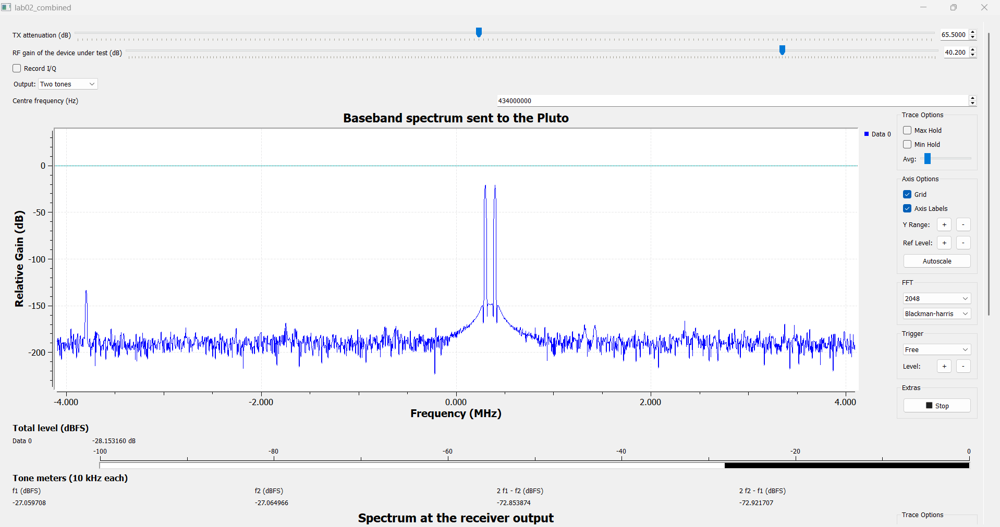
03 / LAB02
روابط مورد استفاده
ضریب نویز، افت نسبت سیگنال به نویز در گیرنده را بیان میکند. برای دمای مرجع T0 ≈ 290 K، چگالی نویز حرارتی حدود −174 dBm/Hz در نظر گرفته میشود. برآورد مستقیم به تبدیل مطلق سطح دیجیتال به ورودی و پهنای باند معادل نویز وابسته است [۱، ص. ۴–۵].
در روش Y-Factor، نسبت توان در دو حالت روشن و خاموش محاسبه میشود. بهره و پهنای باند مشترک از نسبت حذف میشوند. ENR باید به صفحهٔ ورودی گیرنده ارجاع شود؛ اگر تلفات مسیر در ENR مؤثر لحاظ شده باشد، دوباره از آن کسر نمیشود [۱،۲].
برای نقطهٔ تراکم، ابتدا خط مرجع با شیب واحد از ناحیهٔ سیگنال کوچک ساخته میشود. نقطهٔ P1dB جایی است که خروجی واقعی یک دسیبل زیر این خط قرار گیرد. در مدل غیرخطی مکعبی، شیب توان تن اصلی یک و شیب محصولات مرتبهٔ سوم سه است؛ رابطهٔ تقاطع فقط پس از بررسی این رفتار به کار میرود [۱،۳].
در تمام محاسباتی که میانگین دو توان لازم بوده، ابتدا توانهای خطی میانگینگیری شده و سپس نتیجه به دسیبل تبدیل شده است. اعداد گزارش برای خوانایی گرد شدهاند؛ فایل دادهٔ استخراجشده مقادیر نمایشگرها را با دقت اصلی نگه میدارد.
04 / LAB02
بخش اول: نویز گیرنده و برآورد مستقیم
در بخش اول، توان نوار 400 kHz با ورودی باز خوانده شد. ستون اول جدول زیر مستقیماً از نوارسنج پایین تصاویر Part1 گرفته شده است؛ از ارتفاع تقریبی نمودار FFT برای محاسبه استفاده نشده است.
| بهرهٔ RX (dB) | Nopen (dBFS) | NF با GFS=20 (dB) | NF با اصلاح بهره (dB) |
|---|---|---|---|
| 29.7 | -73.364 | 24.62 | 35.12 |
| 40.2 | -74.248 | 23.73 | 23.73 |
| 49.6 | -66.232 | 31.75 | 22.35 |
برای بهرهٔ مرجع 40.2 dB، مقدار ورودیارجاع نویز −94.25 dBm و عدد نویز مستقیم 23.73 dB به دست میآید. چون GFS با بهره تغییر میکند، استفاده از مقدار ثابت ۲۰ برای هر سه تنظیم، مقایسهٔ مستقل از بهره ایجاد نمیکند. برای بررسی روند، ستون آخر بر مبنای مدل زیر محاسبه شده است. این ستون یک برآورد مبتنی بر مدل کالیبراسیون است و از اندازهگیری تازهٔ GFS حاصل نشده است.
با این مدل، NF مستقیم از 35.12 dB در بهرهٔ ۲۹٫۷ به 22.35 dB در بهرهٔ ۴۹٫۶ کاهش مییابد. این روند با کاهش سهم نسبی نویز طبقات بعدی و مبدل هنگام افزایش بهرهٔ پیشین سازگار است. در اندازهگیری با ورودی باز، شرط مرجع نویز دقیقاً مانند یک بار تطبیقشدهٔ ۵۰ اهم نیست؛ بنابراین نتیجه با عنوان «برآورد مستقیم» گزارش میشود.
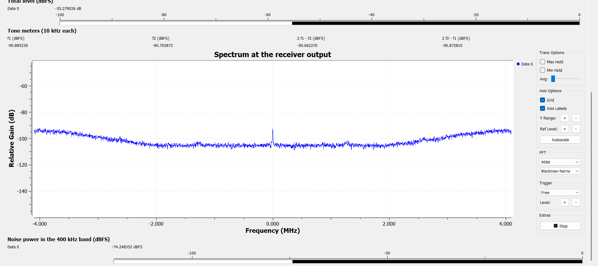
05 / LAB02
بخش دوم: Y-Factor و مقایسهٔ روشها
برای هر بهره، دو تصویر Part2 با پسوندهای on و off جفت شدهاند. Noff این بخش از تصویر Part2 گرفته میشود؛ توان ورودی باز Part1 جایگزین آن نشده است. تنظیم پیشفرض نویز، ENReff ≈ 15 dB در ورودی مرجع را مشخص میکند.
| بهره (dB) | Noff (dBFS) | Non (dBFS) | YdB (dB) | Y خطی | تفسیر NF با ENR=15 |
|---|---|---|---|---|---|
| 29.7 | -72.308 | -49.186 | 23.121 | 205.187 | پاسخ سطح نویز؛ خارج از دامنهٔ این مدل ENR |
| 40.2 | -67.707 | -66.364 | 1.343 | 1.362 | 19.41 dB؛ برآورد اسمی |
| 49.6 | -58.961 | -30.582 | 28.378 | 688.395 | پاسخ سطح نویز؛ خارج از دامنهٔ این مدل ENR |
در بهرهٔ ۴۰٫۲، محاسبه به صورت زیر است:
برای دو بهرهٔ دیگر، نسبت ثبتشده از سقف مدل مرجع بیشتر است. در مدل متعارف با دمای خاموش برابر T0 و NF ≥ 0، بیشینهٔ Y برای ENR برابر ۱۵ دسیبل حدود 15.14 dB است. در نتیجه، ردیفهای 23.12 و 28.38 dB افزایش سطح نویز را نشان میدهند، اما با همین ENR به عدد نویز مطلق گیرنده تبدیل نمیشوند. روابط پارامتری این دو ردیف در زیر حفظ شدهاند تا در صورت تعیین ENR مؤثر هر ثبت، مستقیماً قابل استفاده باشند. این تفکیک، پاسخ اندازهگیریشده را از انتساب آن به مدل منبع جدا میکند.
ENR در محاسبات اصلی مطابق مثال دستورکار به ۱۵ دسیبل گرد شده است. اگر رابطهٔ گردشدهٔ ENR = 73.4 − tx_atten عیناً استفاده شود، تنظیم 58.5 dB مقدار 14.9 dB میدهد و NF محاسبهشده نیز 0.1 dB کمتر، یعنی حدود 19.31 dB خواهد بود. این تفاوت، حساسیت مستقیم NF به مرجع اسمی منبع را نشان میدهد.
اختلاف دو روش در بهرهٔ مرجع 23.73 − 19.41 = 4.32 dB است. روش مستقیم به GFS، پهنای باند معادل و شرایط ورودی باز حساس است. روش Y-Factor به ENR مؤثر و یکسانبودن شرایط خواندن دو حالت وابسته است. همچنین Noff بخش دوم در همین بهره 6.54 dB بالاتر از توان ورودی باز بخش اول است؛ بنابراین این دو مقدار، اندازهگیری یک حالت ورودی مشترک نیستند. اختلاف روشها باید با این تفاوت مرجع و حساسیتهای کالیبراسیون تفسیر شود، نه صرفاً با تفاضل ظاهری دو عدد.
| منبع تغییر | اثر کمی بر نتیجه |
|---|---|
| تغییر +1 dB در GFS | تغییر −1 dB در NF مستقیم |
| تغییر +1 dB در ENR مؤثر | تغییر +1 dB در NF روش Y-Factor |
| افزایش ۱۰٪ در Bn فرضشده | تغییر حدود −0.414 dB در NF مستقیم |
| خطای +0.1 dB در YdB در بهرهٔ ۴۰٫۲ | تغییر دقیق حدود −0.365 dB در NF |
| خطای −0.1 dB در YdB در بهرهٔ ۴۰٫۲ | تغییر دقیق حدود +0.389 dB در NF |
| اختلاف قرائت 0.1 dB در هر یک از Non و Noff | اگر مستقل و با تعبیر انحراف معیار باشند: سهم NF حدود 0.53 dB با تقریب مرتبهٔ اول |
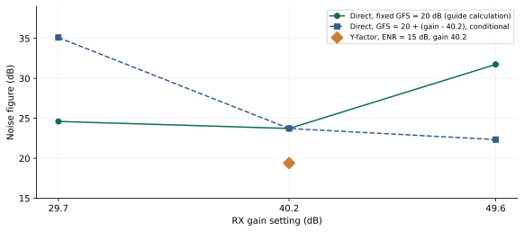
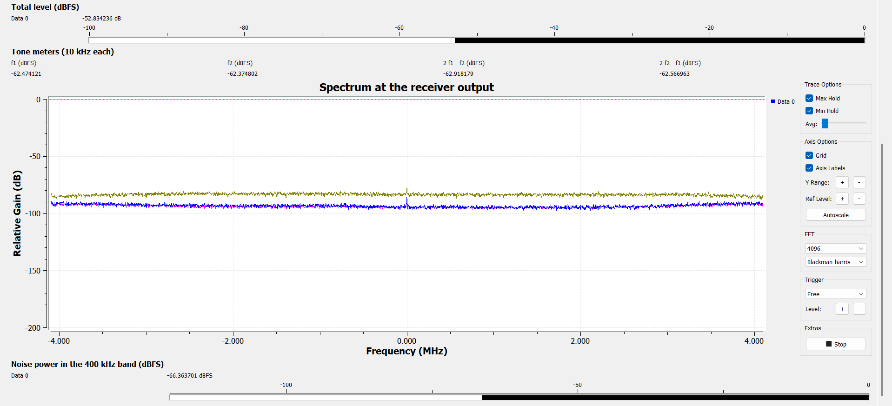
06 / LAB02
بخش سوم: جاروب تکتن و P1dB
۱۰ زوج دادهٔ جدول XLSX، منبع اصلی منحنی تکتن است. خط مرجع با شیب یک و میانگین اختلاف سطح در سه نقطهٔ کمتوان اول تعیین شد. از آنجا که خروجی dBFS و ورودی dBm اسمی است، C0 یک ضریب نگاشت سطح است؛ نباید با بهرهٔ توان آنالوگ یا مقدار تنظیم RF gain یکسان گرفته شود.
| ATX (dB) | Pin اسمی (dBm) | Pout (dBFS) | C=Pout−Pin | افت نسبت به خط (dB) |
|---|---|---|---|---|
| 60 | -95.5 | -25.0 | 70.50 | -0.067 |
| 55 | -90.5 | -20.2 | 70.30 | 0.133 |
| 52 | -87.5 | -17.0 | 70.50 | -0.067 |
| 51 | -86.5 | -16.4 | 70.10 | 0.333 |
| 50 | -85.5 | -15.5 | 70.00 | 0.433 |
| 49 | -84.5 | -14.1 | 70.40 | 0.033 |
| 48 | -83.5 | -13.6 | 69.90 | 0.533 |
| 47 | -82.5 | -12.3 | 70.20 | 0.233 |
| 46 | -81.5 | -11.2 | 70.30 | 0.133 |
| 45 | -80.5 | -10.2 | 70.30 | 0.133 |
شیب برازش کل جاروب 0.982 dB/dB است. بیشترین افت نسبت به خط مرجع 0.533 dB و افت در بالاترین ورودی 0.133 dB به دست آمد. افت یکدسیبلی در هیچ نقطهٔ ثبتشده دیده نمیشود. بنابراین نتیجهٔ آزمون بهصورت ادامهٔ رفتار تقریباً خطی تا انتهای جاروب و کران زیر برای P1dB بیان میشود:
در بالاترین ورودی، خروجی −10.2 dBFS است؛ این مقدار سطح انتهای جاروب است و سطح خروجی در نقطهٔ تراکم محسوب نمیشود. از این ثبت میتوان گفت که خروجی تن اصلی هنوز 10.2 dB زیر مرجع تماممقیاس است. تعیین اینکه نخست کدام طبقه محدودکننده میشود، به مشاهدهٔ خود نقطهٔ تراکم و سطح کل/قلهٔ سیگنال نیاز دارد؛ این نتیجه از سطح یک تن بهتنهایی استنتاج نمیشود.
تصویر مستقل Part3_60dB_attenuation.png مقدار تن −22.350 dBFS را نشان میدهد، در حالی که ردیف متناظر جدول XLSX برابر −25.0 dBFS است. این دو ثبت مستقلاند؛ برای حفظ یکپارچگی جاروب، منحنی و برازش فقط از سری XLSX ساخته شدهاند. تصویر بهعنوان نمونهٔ طیفی همان بخش نگه داشته شده است.
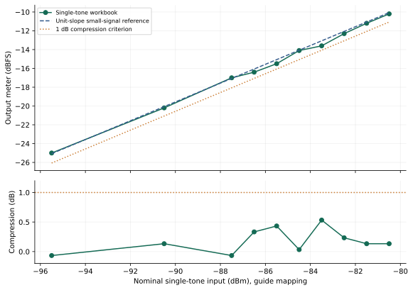
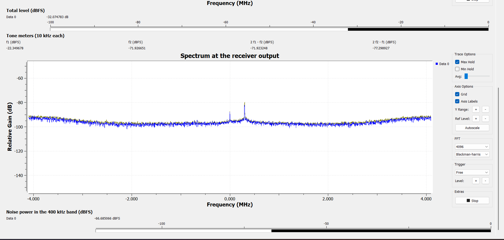
07 / LAB02
بخش چهارم: آزمون دوتن و رفتار مؤلفههای جانبی
توان چهار نوارسنج بهصورت عددی از هشت تصویر جاروب استخراج شد. فرکانسهای مرجع تنها 434.3 و 434.4 MHz و محل محصولات نزدیکباند 434.2 و 434.5 MHz هستند. برای هر ردیف، میانگین توان خطی دو تن و میانگین توان خطی دو مؤلفهٔ جانبی محاسبه و سپس اختلاف آنها با Δ بیان شد.
| ATX (dB) | f1 (dBFS) | f2 (dBFS) | 2f1−f2 (dBFS) | 2f2−f1 (dBFS) | Δ (dB) |
|---|---|---|---|---|---|
| 65 | -27.925 | -27.931 | -73.735 | -73.775 | 45.827 |
| 63 | -26.183 | -26.188 | -72.082 | -72.096 | 45.903 |
| 61 | -25.794 | -25.799 | -71.651 | -71.695 | 45.877 |
| 59 | -23.977 | -23.982 | -70.050 | -70.116 | 46.103 |
| 57 | -23.292 | -23.297 | -69.301 | -69.335 | 46.024 |
| 55 | -18.825 | -18.830 | -64.904 | -64.913 | 46.081 |
| 53 | -16.724 | -16.729 | -62.884 | -62.929 | 46.180 |
| 51 | -14.154 | -14.159 | -60.417 | -60.387 | 46.245 |
بیشترین اختلاف سطح دو تن فقط 0.0053 dB است؛ بنابراین دو تن از نظر سطح متوازناند. در تصویر کف نویز، سطح دو نوار جانبی بهترتیب −84.401 و −84.406 dBFS خوانده شد. در کمتوانترین ردیف جاروب نیز مؤلفههای جانبی حداقل 10.63 dB از کف مربوط بالاترند. پس تغییر مشاهدهشده صرفاً جابهجایی یک نوارسنج در کف نویز نیست.
| مؤلفه | شیب برازش برحسب افزایش ورودی (dB/dB) | تفسیر |
|---|---|---|
| تن اول | 0.9839 | رشد تقریباً یکبهیک |
| تن دوم | 0.9839 | رشد تقریباً یکبهیک |
| مؤلفهٔ 2f1−f2 | 0.9536 | رشد نزدیک یک؛ متفاوت با شیب مکعبی |
| مؤلفهٔ 2f2−f1 | 0.9564 | رشد نزدیک یک؛ متفاوت با شیب مکعبی |
| مؤلفههای جانبی پس از کسر خطی کف | 0.9795, 0.9825 | نتیجهٔ نزدیک یک با اصلاح کف نیز حفظ میشود |
میانگین Δ در هشت سطح 46.03 dB و انحراف معیار آن میان سطحها 0.14 dB است. تقریباً ثابتماندن این فاصله و رشد نزدیک یک در مؤلفههای جانبی، با یک مؤلفهٔ همراه منبع یا مسیر اندازهگیری که همراه تن اصلی مقیاس میشود سازگار است. این رفتار برای انتساب محصولات به غیرخطیبودن مکعبی گیرنده کافی نیست. آزمون تغییر بهرهٔ مستقل، راه تفکیک سهم منبع و گیرنده در دستورکار است؛ از روند موجود منشأ قطعی تعیین نمیشود.
اعمال صوری رابطهٔ Pin + Δ/2، از کمترین تا بیشترین ورودی، اعداد −77.59 تا −63.38 dBm را ایجاد میکند؛ یعنی شاخص با تغییر سطح حدود 14.21 dB جابهجا میشود. یک IIP3 حاصل از مدل مکعبی باید در ناحیهٔ معتبر تقریباً ثابت بماند. بنابراین نمودار زیر از این محاسبه بهعنوان آزمون تشخیصی استفاده میکند و نقطهٔ تقاطع را بهعنوان مشخصهٔ ذاتی گیرنده گزارش نمیکند.
در نخستین ردیف ثبتشده (ATX = 65 dB)، مؤلفههای جانبی از کف قابل تفکیکاند. در نتیجه آستانهٔ ظهور آنها، در محور اسمی، حداکثر −100.5 dBm بهازای هر تن است؛ خود آستانه در بین نقاط جاروب محصور نشده است. در قویترین ردیف، توان ورودی کل دو تن برابر مجموع خطی آنها و حدود 3.01 dB بیشتر از توان هر تن است.
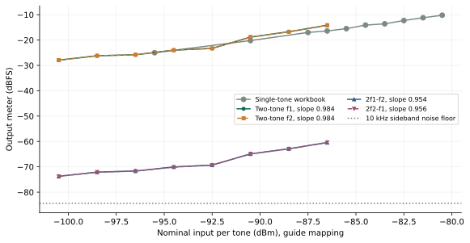
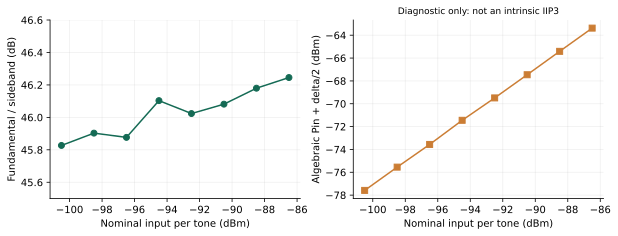
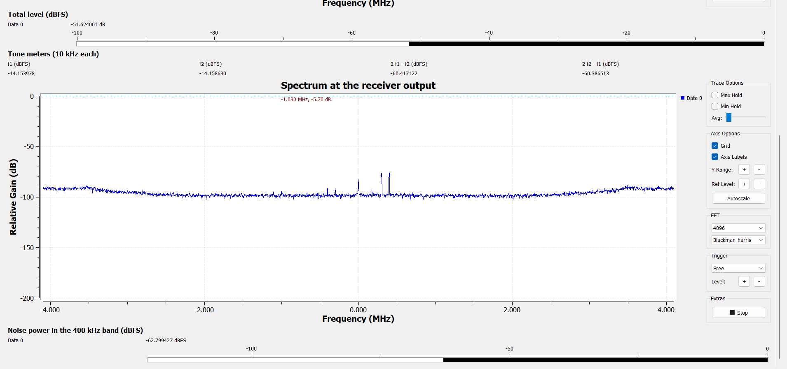
08 / LAB02
بهرهٔ کاری، کف نویز و دامنهٔ دینامیکی
در این مجموعه، بهرهٔ 40.2 dB نقطهٔ کار مشترک آزمون دوتن و تنظیم مرجع بخش سوم است. برای همین بهره، نتیجهٔ Y-Factor با ENR اسمی قابل تفسیر است و جاروب تکتن نیز رفتار تقریباً خطی نشان میدهد. از این رو، این بهره بهعنوان نقطهٔ کار بررسیشده برای ادامهٔ آزمون انتخاب میشود. انتخاب بیشینهٔ SFDR میان سه بهره، به مشخصهٔ خطیبودن متناظر هر سه تنظیم نیاز دارد؛ نقطهٔ کار بررسیشده با ادعای بهینهبودن سراسری یکسان نیست.
با B = 400 kHz و NF اسمی روش Y-Factor، کف نویز ورودی مدل برابر −98.57 dBm میشود. استفاده از برآورد مستقیم، مقدار −94.25 dBm را میدهد. این دو مقدار نشان میدهند که اختلاف NF به همان اندازه کف نویز مدل را جابهجا میکند. برای محاسبهٔ عددی SFDR، IIP3 باید با آزمون شیب تأیید و به همان مرجع توان ورودی کالیبره شود. در دادهٔ فعلی، نتیجهٔ کمی خطیبودن همان کران P1dB و تضعیف نسبی 46.03 dBc است؛ این دو کمیت جایگزین SFDR3 نمیشوند.
با ثابت فرضکردن IIP3، اختلاف 4.32 dB بین برآوردهای NF حدود 2.88 dB بر مقدار محاسبهشدهٔ SFDR اثر میگذارد. افزایش بهره میتواند سهم نویز طبقات بعدی را کم کند، اما همزمان حاشیهٔ ورودی تا محدودیت دامنهٔ مبدل را کاهش میدهد. این دو اثر علت بررسی همزمان NF و خطیبودن هنگام انتخاب بهرهاند.
09 / LAB02
بخش پنجم: پاسخ فرکانسی آنتن
فایل Part5_antenna_response.csv شامل ۱۳۱ نمونه از 400 MHz تا 3000 MHz با گام 20 MHz است. کمیت ذخیرهشده، بیشینهٔ توان دریافتی نسبی در هر فرکانس است. تنظیمات تصویر رابط، تضعیف TX برابر ۵۰ دسیبل و بهرهٔ دستی RX برابر ۲۰ دسیبل را نشان میدهد. همهٔ نقاط CSV در نمودار حفظ شدهاند و برای یافتن نقاط قطع فقط بین نمونههای مجاور قلهٔ اصلی درونیابی شده است.
معیار بخش اندازهگیری دستورکار، افت سه دسیبل از بیشینهٔ منحنی دریافتی است. آستانهٔ متناظر −31.103956 dB است. تقاطع پایین در بازهٔ 1600–1620 MHz و تقاطع بالا در بازهٔ 1700–1720 MHz قرار دارد. نزدیکترین دو تقاطع پیرامون قلهٔ اصلی انتخاب شدهاند تا پهنای باند یک باند پیوسته محاسبه شود.
| کمیت | مقدار |
|---|---|
| فرکانس قلهٔ نمونهبرداریشده | 1660 MHz |
| سطح بیشینه | −28.10 dB relative |
| آستانهٔ افت سهدسیبلی | −31.10 dB relative |
| فرکانس قطع پایین fL | 1605.6 MHz |
| فرکانس قطع بالا fH | 1719.1 MHz |
| پهنای باند fH − fL | 113.5 MHz |
| پهنای باند کسری نسبت به قله | 6.83% |
در آغاز بخش آنتن دستورکار، اثر عبور سیگنال از دو آنتن نیز ذکر شده است. برای دو آنتن مشابه و با فرض ثابت یا جبرانشدهبودن پاسخ تجهیزات و مسیر، تغییر پاسخ دسیبلی یک آنتن نصف تغییر پاسخ زوج است. بنابراین افت سه دسیبل در یک آنتن به افت شش دسیبل در زوج مربوط میشود. این معیار با افت سه دسیبل خود منحنی دریافت تفاوت دارد.
| معیار | fL (MHz) | fH (MHz) | BW (MHz) |
|---|---|---|---|
| افت 3 dB در پاسخ دریافتی زوج | 1605.6 | 1719.1 | 113.5 |
| افت 6 dB در زوج؛ معادل 3 dB تکآنتن با فرض فوق | 1557.3 | 1753.0 | 195.7 |
پاسخ ثبتشده، پاسخ نسبی کل پیوند است و مستقیماً اندازهگیری بهرهٔ مطلق آنتن یا S11 نیست. در حالت کلی، توان فرستنده، پاسخ گیرنده، تلفات انتشار و بازتابهای محیط نیز در آن سهم دارند. حتی در مدل فضای آزاد، تلفات مسیر با فرکانس تغییر میکند؛ در دو قطع معیار سهدسیبلی، اختلاف این سهم حدود 0.59 dB است. بنابراین عدد 113.5 MHz با عنوان پهنای باند پاسخ اندازهگیریشدهٔ پیوند گزارش میشود و عدد 195.7 MHz نتیجهٔ شرطی تفکیک زوج است.
دقت خوانش فرکانسی را گام جاروب تعیین میکند. مقادیر اعشاری جدول حاصل درونیابیاند. یک مقیاس محافظهکارانهٔ تفکیک، نصف گام یعنی حدود 10 MHz برای مکان هر قطع و حدود 20 MHz برای تفاضل دو قطع است؛ این مقیاس، فاصلهٔ اطمینان آماری نیست. نزدیک قلهٔ اصلی، باند دیگری پیرامون حدود یک گیگاهرتز نیز دیده میشود، اما برای پهنای باند قلهٔ اصلی با آن ادغام نشده است.
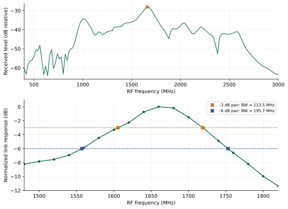
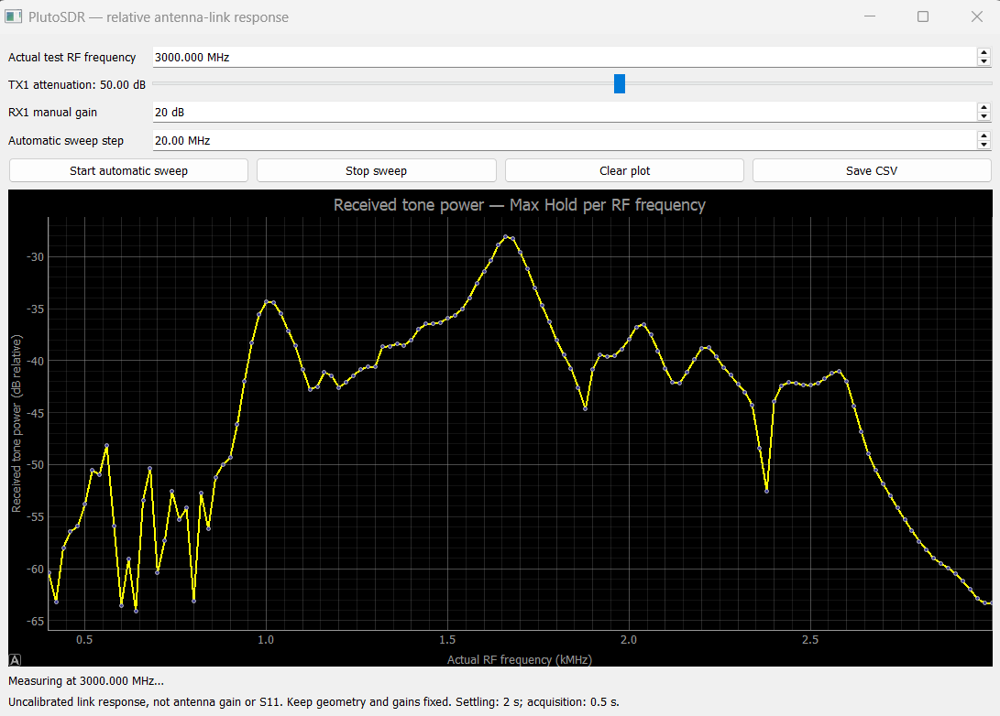
10 / LAB02
پاسخ پرسشهای ۱ تا ۵ دستورکار
پرسش ۱ — روش مستقیم به چه کمیتهایی نیاز دارد که Y-Factor به آنها نیاز ندارد؟ روش مستقیم به کالیبراسیون مطلق سطح، ضریب تبدیل dBFS به ورودی و پهنای باند معادل نویز نیاز دارد. در نسبت Y، بهره و پهنای باند مشترک حذف میشوند؛ در عوض ENR مؤثر منبع و ثبات شرایط دو حالت لازماند.
پرسش ۲ — چرا Y نباید خیلی کوچک یا خیلی بزرگ باشد؟ اگر Y خطی به یک نزدیک باشد، تفاضل Y−1 کوچک و اثر خطای خواندن بزرگ میشود. افزایش شدید منبع نیز ممکن است گیرنده را از ناحیهٔ خطی خارج کند. کوچکترین Y جدول در بهرهٔ ۴۰٫۲ برابر 1.342972 dB است. حساسیت موضعی NF نسبت به YdB حدود −3.760 dB/dB است؛ پس خطای 0.1 dB در اختلاف قرائتها حدود 0.376 dB اثر مرتبهٔ اول دارد. محاسبهٔ دقیق برای افزایش و کاهش ۰٫۱ دسیبل بهترتیب −0.365 و +0.389 dB است. این Y پایینتر از بازهٔ هدف 3–15 dB دستورکار است؛ به همین علت حساسیت عددی همراه نتیجه ثبت میشود.
پرسش ۳ — خروجی در نقطهٔ تراکم چند dBFS بود و عامل محدودکننده چیست؟ در سری موجود معیار افت یکدسیبلی قطع نشده است. خروجی انتهای جاروب −10.2 dBFS است و فقط سطح همین نقطه را مشخص میکند. بنابراین سطح خروجی در P1dB و انتساب محدودیت به ADC یا طبقات آنالوگ از این جاروب تعیین نمیشود. نتیجهٔ قابل گزارش، خطیبودن تقریبی در بازه و کران P1dB است.
پرسش ۴ — شیب اندازهگیریشده و اعتبار IIP3 چیست؟ شیب دو مؤلفهٔ جانبی 0.954 و 0.956 dB/dB است؛ با کسر خطی کف نیز نزدیک یک باقی میماند. این روند با فرض شیب سهٔ لازم برای استخراج IIP3 مکعبی مطابقت ندارد. کمیت تجربی این بخش، تضعیف نسبی حدود 46.03 dBc و مشاهدهٔ مؤلفهها از نخستین سطح جاروب است. برای تفکیک منشأ، باید سهم منبع و گیرنده با تغییر بهرهٔ مستقل مقایسه شود.
پرسش ۵ — مقایسهٔ IIP3−P1dB با ۹٫۶ دسیبل و علت تراکم زودتر در دوتن چیست؟ رابطهٔ حدود 9.6 dB به مدل فشردگی مکعبی با فرضهای مشخص مربوط است و یک هویت عمومی همهٔ گیرندهها نیست. چون در این دادهها P1dB بهصورت کران و IIP3 بهصورت مشخصهٔ مکعبی تعیین نشده، تفاضل عددی آنها ساخته نمیشود. از نظر فیزیکی، دو تن همدامنه هنگام همفازشدن، قلهٔ دامنه را دو برابر میکنند؛ توان قلهٔ متناظر 6.02 dB بالاتر از یک تن است. توان متوسط کل نیز 3.01 dB بالاتر از توان هر تن است. پس محدودیت قله میتواند در دوتن زودتر رخ دهد، حتی وقتی سطح متوسط هر تن پایینتر است.
11 / LAB02
پیشبینی در برابر اندازهگیری و تحلیل اختلاف
در جدول زیر، مدل نظری با مشاهدهٔ همین جلسه مقایسه شده است. برای شیبها، خطای نسبی از اختلاف نسبت به شیب مرجع محاسبه میشود. برای برآوردهای NF، مقایسهٔ نسبی روی ضریب نویز خطی انجام میشود؛ درصدگیری مستقیم از مقادیر دسیبلی به کار نرفته است.
| کمیت | پیشبینی یا مرجع | اندازهگیری | اختلاف و منشأ کمی |
|---|---|---|---|
| شیب تکتن | 1 dB/dB | 0.9818 dB/dB | خطای نسبی 1.82%؛ افت نسبت به خط حداکثر 0.533 dB |
| توازن دو تن | اختلاف نزدیک صفر؛ هدف کمتر از 0.5 dB | حداکثر 0.0053 dB | حدود 0.12% اختلاف توان در بزرگترین عدم توازن؛ نسبت به صفر درصد تعریف نمیشود |
| شیب جانبی مدل مکعبی | 3 dB/dB | میانگین حدود 0.9550 dB/dB | فاصلهٔ نسبی 68.17% از مدل؛ Δ تنها حدود 0.42 dB در کل جاروب تغییر میکند |
| دو برآورد NF در بهرهٔ ۴۰٫۲ | مستقیم: 23.73 dB | Y-Factor اسمی: 19.41 dB | اختلاف 4.32 dB؛ ضریب نویز مستقیم حدود 2.71 برابر است، یعنی 170.6% بیشتر |
| P1dB | افت یکدسیبلی نسبت به خط مرجع | بیشینهٔ افت 0.533 dB | نقطه در بازه قطع نشده؛ نتیجه به صورت کران است |
| نقاط نصف توان پاسخ پیوند | افت اسمی 3 dB | دو قطع 1605.6 و 1719.1 MHz | نسبت توان 10^(−3/10) = 0.5012؛ اختلاف 0.24% نسبت به نصف دقیق، ناشی از گردکردن معیار ۳ dB |
در مقایسهٔ دو برآورد نویز، نقش ENR و GFS یکبهیک برحسب دسیبل است. در پاسخ فرکانسی، گام ۲۰ مگاهرتز و اختلاف حدود ۰٫۵۹ دسیبل در سهم تلفات فضای آزاد میان دو قطع، دو مقیاس مشخص برای تفسیر اعدادند. برای سریهای تکتن و دوتن نیز دقت نمایش و تفاوت ثبتهای مستقل از عدم قطعیت کالیبراسیون توان ورودی جدا نگه داشته شده است.
12 / LAB02
جمعبندی
آزمایش نشان داد که بررسی همزمان سطح نویز، شیب انتقال و رشد مؤلفههای جانبی برای توصیف گیرنده ضروری است. در بهرهٔ مرجع ۴۰٫۲ و با منبع اسمی دستورکار، NF روش Y-Factor حدود ۱۹٫۴۱ دسیبل و برآورد مستقیم حدود ۲۳٫۷۳ دسیبل است. حساسیت به مرجع سطح، پهنای باند و ENR منشأ اصلی تفاوت تفسیر دو روش است.
جاروب تکتن رفتار تقریباً خطی را تا انتهای بازه نشان میدهد و P1dB بالاتر از آخرین سطح ورودی اسمی قرار دارد. در آزمون دوتن، توازن مناسب تنها و فاصلهٔ جانبی حدود ۴۶ دسیبل مشاهده شد؛ رشد نزدیک یک، ویژگی تعیینکنندهٔ این ثبتهاست. پاسخ آنتنی نیز قلهای در ۱٫۶۶ گیگاهرتز و باند سهدسیبلی پیوستهای با پهنای حدود ۱۱۳٫۵ مگاهرتز دارد. تفکیک نتایج اندازهگیریشده، کرانها و مدلهای تبدیل، امکان استفادهٔ درست از این دادهها در انتخاب تنظیم گیرنده را فراهم میکند.
13 / LAB02
دادهها، تصاویر و بازتولید محاسبات
فایلهای زیر دادهٔ اولیه، عددهای استخراجشده و نتایج محاسبات را در کنار گزارش نگه میدارند. اسکریپت تحلیل از دادهٔ XLSX و CSV و جدول رونویسی تصاویر استفاده میکند؛ مسیر فایل تصویر در هر ردیف داده موجود است.
در پیوست تصویری نسخهٔ وب، همهٔ ۲۲ تصویر جلسه با نام اصلی در دسترساند. با انتخاب هر تصویر میتوان نسخهٔ اصلی را دید. PDF شامل تصاویر منتخب در محل تحلیل است؛ مجموعهٔ کامل تصاویر در بستهٔ همراه قرار دارد.
14 / LAB02
مراجع
- دستورکار آزمایش ۲: عدد نویز و پارامترهای RF؛ Noise Figure, P1dB and IIP3. فایل lab_02_nf.pdf، ۹ صفحه. منبع روابط، تنظیمات مرجع و پرسشهای گزارش.
- Keysight Technologies, Noise Figure Measurement Accuracy: The Y-Factor Method, Application Note 57-2, 5952-3706. مرجع روش و اثر شرایط کالیبراسیون.
- Analog Devices, IP3 and Intermodulation Guide. مرجع رشد مرتبههای مختلف و معنای نقطهٔ تقاطع برونیابیشده.
- ثبتهای جلسهٔ گروه: ۲۲ تصویر pictures.zip، فایل P1db.xlsx و فایل Part5_antenna_response.csv. تنظیم پیشفرض منبع نویز بر اساس توضیح گروه همراه دادهها.